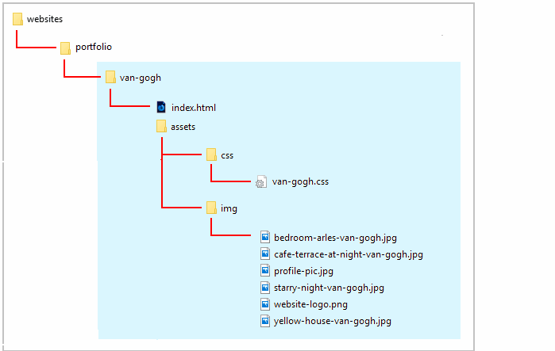

Introduction
This single-page website for about Vincent van Gogh contains an embedded and responsive video from YouTube.
It also includes menus and a footer.
You can display a finished version of this project by clicking the image below.

This single-page website for about Vincent van Gogh contains an embedded and responsive video from YouTube.
It also includes menus and a footer.
You can display a finished version of this project by clicking the image below.
At the end of this Tutorial you will be able to:
Your first step is to download the files you need for this project.
This will create a sub-folder named van-gogh inside your portfolio folder.

The folders, sub-folders and files for this ‘van Gogh’ project will be as shown below.
Now you can begin to work with the files you have downloaded.
You can close any other files you may have open in VS Code.
Display the index.html web page in your browser. It should look as shown below.

Your first step is to embed the video from YouTube into your web page.


 You can now close the YouTube web browser tab.
You can now close the YouTube web browser tab.
The problem with embedding YouTube videos directly is that they are positioned in an iframe container. You cannot make an iframe responsive. A fixed width and height need to be set for it.
Follow these steps to make the embedded video scale according to the width of the user’s screen.
<div class="video-container"> <iframe src="https://www.youtube.com/embed/klZNNUz4wPQ" frameborder="0" allow="accelerometer; autoplay; encrypted-media; gyroscope; picture-in-picture" allowfullscreen></iframe> </div>
.video-container { overflow: hidden; position: relative; width: 100%; margin-bottom: 32px; } .video-container::after { padding-top: 56.25%; display: block; content: ''; } .video-container iframe { position: absolute; top: 0; left: 0; width: 100%; height: 100%; }Note the padding-top: 56.25% style rule. That is set according to the aspect ratio of the video. In this example, the video’s aspect ratio is 16:9. Hence the figure of 56.25%, which is the result of 9/16. If the embedded video is 4:3 however, you would set the padding value to 75%.
You can display a finished version of the project web page by clicking the image below.
All the files you have updated for this project are in the van-gogh sub-folder of your websites/portfolio folder.
So the easiest option is simply to upload the entire van-gogh sub-folder to your account on GitHub.


Your ‘van Gogh’ project web page is now published on GitHub at a web address similar to the following, where username is the username you have chosen for your GitHub account:
https://username.github.io/portfolio/van-gogh/index.html
or, simply:
https://username.github.io/portfolio/van-gogh
It may take a few minutes for your uploaded files to appear on GitHub.
Return to Contents.